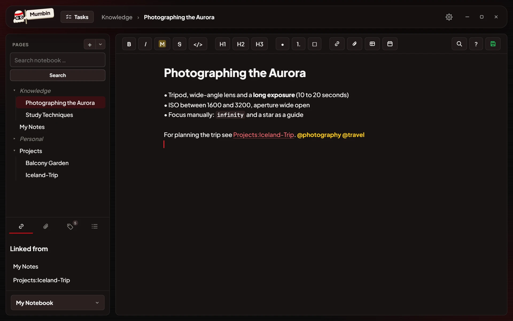
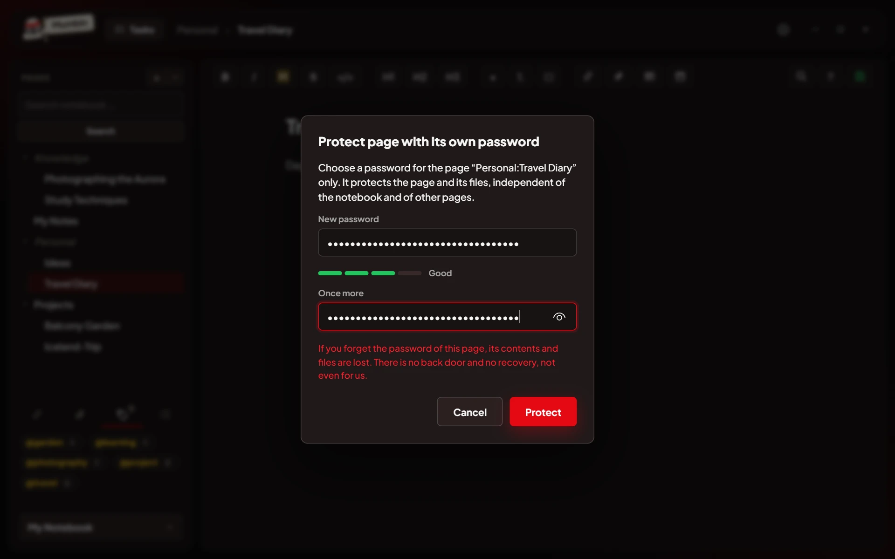
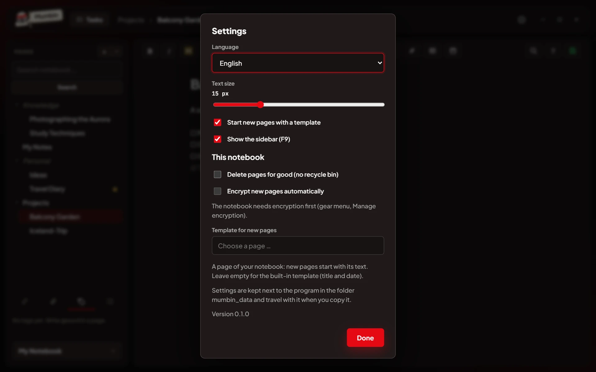
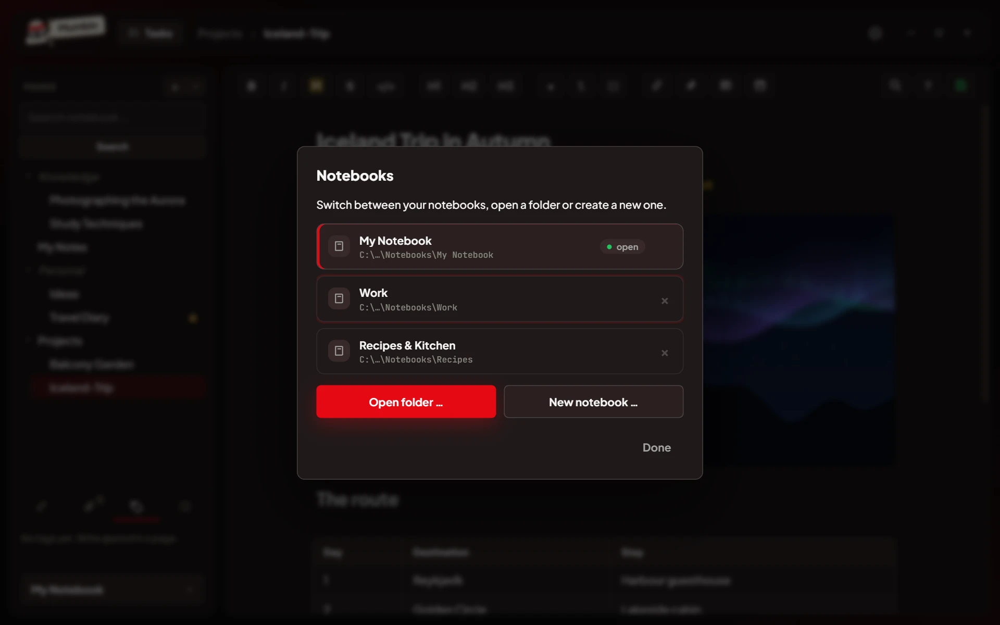

Mumbin in pictures: features and actual app screenshots
Real images of the current version with synthetic sample data. Click to enlarge.












Real images of the current version with synthetic sample data. Click to enlarge.



